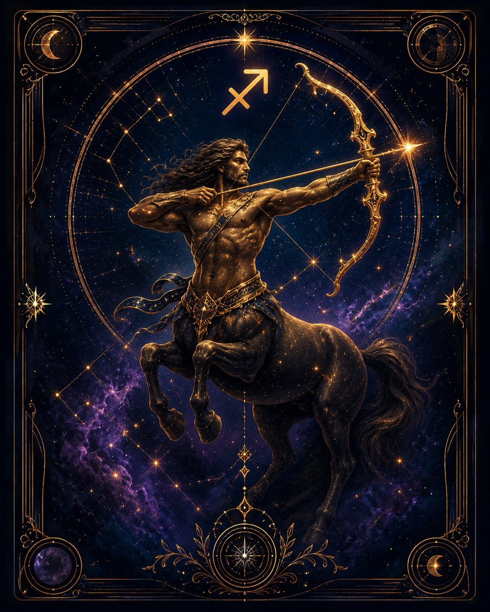

В двух словах
«А что там дальше?»
Какой это человек
Стрелец стремится выйти за пределы уже известного мира. Его тянут новые знания, дальние места, философские идеи, путешествия и широкие перспективы. Он ищет не только факты, но и смысл.
Что ему движет
Расширение горизонта и понимание общей картины.
Сильные стороны
Оптимизм, масштабное мышление, любознательность, способность вдохновлять идеей, вера в возможности.
Слабые стороны
Разбросанность, переоценка своих сил, склонность обещать больше, чем можно выполнить.
В отношениях
Нужны свобода, развитие и ощущение, что отношения расширяют жизнь, а не ограничивают её.
В работе и деньгах
Подходят образование, международные направления, путешествия, продвижение идей, философия, крупные проекты.
Когда всё плохо
Убегает от реальной проблемы в новую грандиозную идею.
Главное внутреннее противоречие
Ищет большую истину, но иногда так увлекается горизонтом, что не замечает очевидного под ногами.
Это обобщённое описание солнечного знака, а не полный портрет человека. В реальной натальной карте характер зависит не только от Солнца, но и от других факторов.